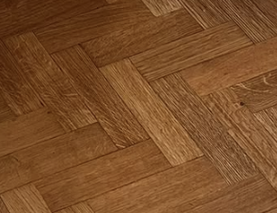

Nouveau départ depuis la pièce vide. Le plan et la coupe sont générés depuis le modèle 3D : une seule source, aucune cote reportée à la main.
Principe
Mur nord
Mur nord : 6 meubles bas de 20 + 60 + 60 + 60 + 60 + 40 (x 10 → 310), à 10 du mur ouest et 10 du retour de cloison du cellier (fileurs Canopée) : plan de travail de mur à mur ; caisson METOD P60 (rail de 1 compris) + façade 2, profondeur 62, sous un plan de travail de 4 (P63,5, débord de 1,5), sauf B6 (P37,6 + façade, profondeur 39,6, plan P41,1) qui laisse se replier la porte du cellier.
Induction
Induction 60 classique, four encastré dessous et hotte intégrée dans H1 au-dessus, sur B2 (x 30 → 90) ;
Montrer sur le planÉvier
évier inox 1 bac 56 × 50 (bac 40 × 40) sur B5 (x 210 → 270), mitigeur derrière le bac, égouttoir à gauche au-dessus de B4.
Montrer sur le planMur est
Mur est : colonnes C1 (lave-vaisselle en hauteur, micro-ondes au-dessus, y 115 → 175) et C2 (frigo, y 175 → 235) de 60, P62, fileur chêne de 5 entre C2 et le décroché (la porte du frigo s'ouvre à 90° sans toucher le fileur de l'entrée), contre le mur du WC (x 382), du décroché vers le nord, façades vers l'ouest (x 320). Le mur sud est libre entre la table et le caisson du galandage.
Porte d'entrée
Porte d'entrée : à galandage, vantail 83 × 204 (trait plein, fermé) ; ouverte, elle rentre vers l'ouest dans un caisson de galandage (ocre, x 140 → 225) logé dans un doublage de 10 contre le mur sud (y 242 → 252), avec un montant de 4 à l'est de la baie. Le passage reste de 78 ; rien ne bat dans la cuisine.
Montrer sur le planTableau noir
Face cuisine du caisson : tableau noir (peinture ardoise, h 120 → 200) et zone aimantée en dessous (h 70 → 118), sur 81 de large (coupe B-B).
Montrer sur le planÉquipements
Équipements : poubelles de tri sous l'évier (B5), four sous la plaque (B2), lave-vaisselle 60 tout intégrable en hauteur dans C1.
Triangle d'activité
Triangle d'activité (rouge ; centres de la plaque et de l'évier, milieu de la façade du frigo) : frigo → évier 191, évier → plaque 180, plaque → frigo 313, total 683 cm.
Passage
Passage (cote oblique) : 72 du coin du plan de travail P63,5 (B5, x 270, y 63,5) au coin nord-ouest de C1 (y 115), devant la porte du cellier.
Réseaux
Réseaux (bleu ; pose type IKEA METOD, sans vide technique : 1 cm de jeu derrière les caissons). Le LV, en hauteur dans C1, est raccordé par le cellier sans le traverser : alimentation depuis la nourrice le long du mur est puis du mur nord du WC, sous le rayonnage sud, jusqu'au dos de C1 ; vidange pompée par le LV le long du même mur, directement dans la chute. À l'est de l'évier, les tuyaux passent dans le fond de B6 (découpé, tiroirs P30) et derrière son fileur, puis dans le retour de cloison au nord de la porte du cellier : tout longe les murs, en partie basse. Alimentation EF/EC en trait plein, à 3 des murs, depuis la nourrice (petit point, sous le ballon) : le long du retour sud de l'alcôve (y 44), de sa face ouest (x 434), puis du mur nord jusqu'à l'évier ; une seconde ligne va au LV (C1) le long du mur nord du WC. Dans la niche du cellier, tout reste dans la zone technique des 30 premiers cm (la chute est basse, dernier étage) : l'alimentation y passe à h 20 et remonte dans l'angle, l'évacuation descend à h 25 sous la première tablette du rayonnage nord ; un coffre technique (h 0 → 30) couvre l'angle. Évacuation en tireté depuis le siphon de l'évier (axe x 240), à 4 du mur nord dans la cuisine, puis à 12 des murs pour passer au-delà de la nourrice : le long du mur nord, de l'alcôve, du mur est (x 484) puis du mur nord du WC jusqu'à la chute (cercle contre le mur du WC, sous le ballon : la colonne d'eaux usées existante, x à confirmer). Contre l'alcôve, ils passent sous la première tablette du rayonnage du mur nord ; sous le ballon (h 90), ils passent dessous ; longueur ≈ 363 : de h 43 sous le siphon à h 25 à la chute, soit 5.0 cm/m de pente moyenne (hauteur d'arrivée sur la chute à confirmer). Les réseaux traversent la cloison du cellier.
Cellier
Cellier : cloison de 7 (x 320 → 327), contre le fileur de B6.
Porte du cellier
Porte du cellier (porte pliante sur ferrure Mantion Tango, 2 vantaux repliés au nord) : un retour de cloison va du mur nord à y 48 (passage des réseaux ; V13.0 : allongé de 40, la porte descend d'autant vers le sud) ; la baie va jusqu'au flanc nord de C1 : 67 × 204 sous un linteau. Porte pliante sans dormant sur ferrure Mantion Tango (TANGO40-120, rail alu sous le linteau, pas de rail au sol), deux panneaux de 33,2 × 197,6 × 1,9 à faire découper, pivot au nord : en s'ouvrant, les vantaux se replient l'un contre l'autre et se rangent côté cuisine contre le retour de cloison, à 6,9 du plan de B6 (P41,1 : c'est ce qui fixe sa profondeur ; côté cellier, ils heurteraient le rayonnage nord) ; le vantail du pivot balaie 33,2 côté cuisine. Poignée au sud, côté C1 ; le bouton au-dessus du plan la montre ouverte, mi-ouverte (vantaux en V, pivot à 60°) ou fermée. Passage libre ≈ 61 ; accès depuis la cuisine, du coin du plan de B5 à l'angle de C1 : 72.
Montrer sur le planPassages dans le cellier
Passages dans le cellier : 75 à l'entrée, entre le rayonnage nord et le flanc de C1 ; 46 entre le rayonnage nord et les balais, vers la niche.
Organisation du cellier
Organisation du cellier : un rayonnage toute hauteur P40 contre le mur nord, du retour de cloison (V13.0 : prolongé jusqu'à lui, sans arrondi) jusqu'au mur de l'alcôve (x 327 → 434, 6 tablettes de 103, la première à h 60 au-dessus des tuyaux), pour les denrées, avec l'aspirateur couché dessous, au bout est ; contre le mur du WC (V13.6, à la place du rayonnage sud), deux balais sur un tasseau à 8 du mur, devant les tuyaux du LV ; entre les deux, 46 de passage vers la niche : nourrice, groupe de sécurité et chute restent accessibles. Au-dessus des balais (V13.22), une étagère P15 à deux tablettes (h 170 et 195) pour les produits d'entretien, à part de la nourriture ; le seau au sol dans l'angle sud-est, contre C1.
Finitions
Finitions : fileur chêne de 5 au sud de C2, jusqu'au fileur couleur des murs qui ferme l'angle au nu du montant de l'entrée (y 242), joue à l'ouest de H1, fileurs de 10 entre B6 / H5 et le retour de cloison, fileurs de 7 jusqu'au plafond au-dessus des hauts et des colonnes.
Coin repas
Coin repas (V13.17) : banquette d'une place contre le mur ouest, dans l'angle sud-ouest, assise tournée vers l'est (x 0 → 50, y 180 → 250 : 70 de long, dossier 5 à h 85 contre le mur, assise 45 à h 45 avec coffre) ; elle passe de 20 sous la fenêtre (y 200), le dossier reste sous l'allège (h 106). Table type Véra 70 × 70 aux angles arrondis (rose poudré, chant noir), sur un pied central à embase, à 10 de l'assise et à 10 du bas de mur sud (x 60 → 130, y 170 → 240) : son bord nord est à 56 de la porte du four ouverte (y 114) et à 106,5 du plan de travail. Une chaise 42 × 42 en face, côté est, dossier à l'est.
Bas de mur
Mur sud derrière la table : bas de mur en chêne miel (2, h 85, x 0 → 140), où s'appuie la banquette, et papier peint Hermione au-dessus jusqu'au plafond (voir Matériaux).
Suspension
Suspension (tireté jaune) : point lumineux au plafond centré sur la table, abat-jour Ø 35, bas à h 140, soit 65 au-dessus du plateau (coupe B-B).
Places
Places : 1 sur la banquette + 1 sur la chaise ; un tabouret pliant côté nord en appoint.
Sous la banquette
Sous la banquette : un seul tiroir, ouvert côté nord (façade h 6 → 40), hors des jambes et de la table (tireté : tiroir sorti de 35, jusqu'à y 143).
Montrer sur le planAu-dessus de la banquette
Au-dessus (tireté) : étagère P25 contre le mur sud, du mur ouest au doublage de l'entrée, dessus à h 162.5, avec l'enceinte audio (22 × 18 × 30) à l'est et la plante à l'ouest (coupe B-B).
Montrer sur le planOuvertures
Ouvertures : porte du LV abattue (C1, x 262 → 320, y 115 → 175), porte du four abattue (sous la plaque), porte du frigo (dessinée à 90°), charnières au sud : elle se rabat vers le sud, devant le fileur de C2 (5), et on accède au frigo par le nord, côté évier. Elle s'ouvre au plus à ≈ 100° porte d'entrée fermée (son bout touche le vantail d'entrée) et ≈ 120° porte d'entrée ouverte (montant du galandage) ; calcul sur une façade de 60 × 2 tournant autour de son angle avant, à quelques degrés près selon la charnière.
Meubles hauts
Meubles hauts (tireté) : 5 de 60 + 60 + 60 + 60 + 40, x 30 → 310, joints au droit de ceux des bas, fileur de 10 jusqu'au retour de cloison ; à leur gauche, étagères ouvertes jusqu'au mur ouest ; caisson P37,6 + façade 2 (H5 compris, comme H4).
Hauteur du plan de travail (étude)
Étude seulement : rien n'est appliqué au plan, le plan de travail reste à 92 dans le modèle, les coupes et les rendus.
| Plan | Vincent (coude 104) | Victor (coude 113) | Hors fourchette cuisinistes (total) | Plan → hauts | Comment l'obtenir (caisson METOD 80 + plan 4) |
|---|---|---|---|---|---|
| 92 (actuel) | coude − 12 cuisinistes : oui léger : 2 trop bas, appui : oui | coude − 21 cuisinistes : 6 trop bas léger : 11 trop bas, appui : oui | 6 | 63 | actuel : pieds METOD 8, plinthe IKEA 8 |
| 94 | coude − 10 cuisinistes : oui léger : oui, appui : oui | coude − 19 cuisinistes : 4 trop bas léger : 9 trop bas, appui : oui | 4 | 61 | pieds METOD réglés vers le haut de leur course (≈ 10,5 au plus, à vérifier), plinthe recoupée à 10 |
| 96 | coude − 8 cuisinistes : 2 trop haut léger : oui, appui : 2 trop haut | coude − 17 cuisinistes : 2 trop bas léger : 7 trop bas, appui : oui | 4 | 59 | pieds de 12 d'une autre marque (type SoTech), plinthe sur mesure de 12 |
| 98 | coude − 6 cuisinistes : 4 trop haut léger : oui, appui : 4 trop haut | coude − 15 cuisinistes : oui léger : 5 trop bas, appui : oui | 4 | 57 | pieds de 14 d'une autre marque, plinthe sur mesure de 14 |
| 101 | coude − 3 cuisinistes : 7 trop haut léger : 2 trop haut, appui : 7 trop haut | coude − 12 cuisinistes : oui léger : 2 trop bas, appui : oui | 7 | 54 | pieds de 17, plinthe sur mesure de 17 |
Ce que disent les sources. Tout le monde part du coude, mais pas avec le même écart. Les cuisinistes (Bora, Neff, guides allemands) disent 10 à 15 sous le coude ; la table de Neff donne coude 107 → plan 92, coude 114 → 99, coude 125 → 110. Les références d'ergonomie du travail debout (HSE, Pheasant et Haslegrave, Bodyspace ; NIOSH d'après Grandjean) distinguent la tâche : gestes légers 5 à 10 sous le coude, tâches avec appui 10 à 25 sous le coude, travail de précision au-dessus du coude. La règle des cuisinistes (10 à 15) est un compromis entre les deux, pour une cuisine où l'on fait de tout.
Ce que ça change pour vous deux. Avec la règle des cuisinistes, les fourchettes ne se recouvrent pas (Vincent 89 → 94, Victor 98 → 103). Avec la règle par tâche, elles se recouvrent : de 94 à 99, le plan est « léger » pour Vincent et « appui » pour Victor, donc correct pour les deux, à condition que Victor fasse surtout la découpe et la pâte, et Vincent les gestes fins. Le plan conseillé, 96, est au milieu de ce recouvrement et partage l'écart à la règle des cuisinistes : 2 de trop pour Vincent, 2 de trop peu pour Victor.
Trop haut ou trop bas ? Une étude sur onze cuisines de cantine a trouvé le plan de découpe trop haut pour un tiers des cuisiniers, d'après leur coude ; les douleurs de nuque et d'épaule y étaient plus fréquentes chez les plus petits. Un plan trop haut fait lever les épaules ; un plan trop bas fait pencher le dos. Les deux fatiguent ; on compense facilement un plan trop bas (planche épaisse de 4 à 5 pour le plus grand), pas un plan trop haut.
Évier : il pousse vers le haut. Neff mesure l'évier au fond du bac : c'est lui qui doit être à la hauteur de travail (coude − 15), et le bord peut monter jusqu'à 15 au-dessus. Avec un bac d'environ 18 à 20 de profondeur (à vérifier sur le modèle), le fond est à ≈ 77 pour un plan à 96 : 12 sous la hauteur de travail de Vincent (89), 21 sous celle de Victor (98). Aucun plan standard ne met le fond du bac à la bonne hauteur : la vaisselle est le poste où l'on se penche le plus, Victor surtout, et chaque centimètre gagné sur le plan y compte. À 92, le fond serait à ≈ 73. Un bac moins profond, ou un égouttoir / bassine posé dans le bac pour la vaisselle à la main, réduit l'écart.
Plaque : elle pousse vers le bas. Le bord de la casserole donne la hauteur de travail : Neff conseille la plaque 15 sous le plan, Siemens 20 sous le coude (Vincent 84, Victor 93) ; certains guides allemands la mettent au contraire au même niveau que l'évier, 10 sous le coude. Pas de consensus. Sur un plan continu, la plaque est à la hauteur du plan : à 96, haute pour Vincent dans une grande casserole, correcte pour Victor.
Couples de tailles différentes. Les designers proposent trois réponses : choisir la hauteur de celui qui cuisine le plus, faire des zones à deux hauteurs (souvent un îlot plus haut que le linéaire), ou un plan réglable. Ici, sans îlot, une zone à deux hauteurs voudrait dire un ressaut dans le plan du mur nord, par exemple l'évier (B5) et B6 plus hauts que la plaque et les tiroirs (B1 → B4) ; c'est faisable avec des pieds différents mais cela casse la ligne du plan, de la crédence et des façades.
Avant de décider : essayer. Comme pour l'implantation (V13.17), un essai grandeur nature tranche mieux que les règles : un plateau posé sur des cales à 92, 96 puis 98, et chacun y coupe des légumes, y pétrit, y tient une casserole pendant quelques minutes.
Conséquences d'un plan plus haut. Les colonnes C1 et C2 sont sur les mêmes pieds : elles montent d'autant (dessus 228 + Δ, fileur au-dessus réduit). Les meubles hauts restent à h 155 : l'espace plan → hauts diminue (colonne « Plan → hauts ») ; vérifier la distance minimale plaque → hotte imposée par la notice de la hotte intégrée dans H1. Au-delà de 94, la plinthe IKEA de 8 ne suffit plus : plinthe sur mesure (même façade). Four sous la plaque et lave-vaisselle en hauteur dans C1 : non concernés.
Sources. Règle des cuisinistes : Bora ; Neff (plan, plaque, évier) et sa table coude → plan ; Hausjournal (évier et plaque 10 sous le coude) ; Siemens (plaque 20 sous le coude). Ergonomie du travail debout : HSE ; CRE-MSD ; NIOSH, Elements of Ergonomics Programs (d'après Grandjean). Étude en cantine : PubMed 15676673 (résumé seul). Couples : Livingetc, Homes & Gardens. Pieds METOD (≈ 7 → 10,5, chiffre de forum, non confirmé par IKEA) : Forumconstruire, fiche IKEA.
Porte du cellier, Mantion Tango
| Ferrure | Mantion Tango TANGO40-120 : kit 2 panneaux, rail alu de 1,20 (à recouper à 67), 1 monture à roulements, pivot haut, pivot bas, 3 charnières sur chant. 40 kg par panneau, 16 à 40 d'épaisseur. |
|---|---|
| Panneaux (à faire découper) | 2 × 33,2 × 197,6 × 1,9 (mélaminé ou plaqué chêne, ≈ 9 kg chacun). Notice : largeur Lp = (B − 1,2 − J) / 2 mm, J = 4 pour 16 à 22 d'épaisseur ; hauteur Hp = H − 64. |
| Baie | 67 × 204 : rail 33 × 27 vissé sous le linteau, dans l'épaisseur de la cloison de 7 ; jeu de 2 sous le rail, panneaux h 1,1 → 198,7. |
| Sol | pas de rail : un seul pivot bas, au nord, contre le mur neuf. Le bout libre est tenu en haut par la monture. |
| Passage libre | ≈ 61. À confirmer avec le logiciel SLIDESOFT de Mantion. |
| Prix | ≈ 110 € TTC (Bricozor, kit 2 panneaux), plus les panneaux. |
Le principe. Une porte pliante à deux vantaux, sans dormant ni cadre : toute la ferrure tient dans un rail en aluminium vissé sous le linteau. Le vantail nord tourne sur deux pivots (haut et bas) placés contre le bout du mur neuf ; le vantail sud lui est attaché par trois charnières sur chant et son bout libre est suspendu à une monture à roulements qui roule dans le rail. Fermée, la porte est dans l'épaisseur de la cloison, au nu côté cuisine (rail à x 320,9).
À l'ouverture. On tire la poignée, au sud, côté C1 : le vantail nord pivote vers la cuisine, le vantail sud se plie contre lui et la monture glisse vers le nord. Ouverte, la porte forme un paquet de 3,8 d'épaisseur, perpendiculaire à la baie, côté cuisine, qui dépasse de 33,2 : il reste 6,9 jusqu'au plan de B6. Elle ne peut pas s'ouvrir vers le cellier : le paquet heurterait le rayonnage nord. Passage libre ≈ 61.
Pourquoi ce modèle. Il est vendu « pour portes de séparation et portes de placard » : pas de rail au sol (le sol reste continu entre cuisine et cellier), panneaux de 16 à 40 mm et jusqu'à 40 kg, alors que les nôtres font 1,9 et ≈ 9 kg. Sa géométrie est celle dessinée sur le plan : pivot au nord, paquet replié hors de la baie, côté cuisine.
Pose. Rail recoupé à la largeur de la baie et vissé sous le linteau (sous-face h 204) ; pivot bas vissé au sol contre le mur neuf ; panneaux découpés, charnières sur chant ; réglage en hauteur à la clé (jeu de 2 sous le rail, 1,1 au sol). En option, les charnières indexables 1504 PI tiennent la porte fermée et suppriment le jeu entre panneaux, mais changent les cotes de découpe (refaire le calcul avec SLIDESOFT).
À vérifier avant de commander. Le passage exact, que la notice ne donne pas ; l'unité du « 1,2 » de la formule de largeur (lu en mm ; en cm, chaque panneau perd 5 mm) ; la finition des panneaux et la poignée.
Sources : notice commerciale Mantion Tango (cotes de baie et de panneau), fiche revendeur (16 à 40 mm, 750 de large au plus).
Électricité
Quel interrupteur allume quoi
| Inter. | Où | Touche | Allume | Fonctionnement |
|---|---|---|---|---|
| S1 | Entrée, h 110 sur le fileur à droite de la baie (x 312 → 322, face nord), côté poignée de la porte : plaque verticale 3 postes (le fileur fait 10 de large) ; le câble descend du plafond dans la poche fermée par le fileur | haut | L1 plafonnier | simple allumage |
| milieu | L2 LED sous les hauts | va-et-vient avec S2 | ||
| bas | L3 suspension | poussoir du variateur, avec S3 | ||
| S2 | Bout du plan, h 110 retour de cloison au nord de la porte du cellier (face ouest, x 320), au-dessus du plan de B6, à 19 du plan : plaque verticale 2 postes (V13.4 : il ne reste que 6 de mur entre le plan et la baie) | haut | L2 LED sous les hauts | va-et-vient avec S1 |
| bas | L4 cellier | simple allumage, à voyant : on voit la lumière restée allumée porte fermée | ||
| S3 | Banquette, h 105 mur sud, juste à l'est du dossier de la banquette, au-dessus de la table : à portée de main assis ; sur la même plaque que P11 (V13.17 : le mur ouest est pris par le dossier) | — | L3 suspension | poussoir du variateur, avec S1 |
| — | Hotte | — | lumière de la hotte | touches de la hotte |
En entrant, la main droite trouve S1 : en haut le plafonnier, au milieu les LED du plan de travail, en bas la suspension. On cuisine : S2, au bout du plan à côté de l'évier, allume ou éteint les LED sans revenir à l'entrée ; sa touche du bas allume le cellier en passant la porte (le voyant signale une lumière oubliée derrière la porte fermée). On passe à table : la suspension se règle depuis la banquette (S3) ; S1 et S3 sont deux poussoirs d'un même variateur (appui court : allume ou éteint, appui long : varie). En sortant, tout s'éteint depuis S1, sauf le cellier (S2).
Points
| Repère | Quoi | Où | h | Circuit |
|---|---|---|---|---|
| L1 | Plafonnier | au plafond (boîtier DCL), centré sur la zone de travail (entre la rangée nord, les colonnes et l'entrée) : éclairage général | plafond | Éclairage |
| L2 | LED sous les hauts | rubans déjà prévus sous H1 → H5 ; alimentation (driver 24 V) dans le haut de H4, au-dessus des assiettes | plafond | Éclairage |
| L3 | Suspension | point de plafond déjà prévu (boîtier DCL), centré sur la table | plafond | Éclairage |
| L4 | Cellier | hublot ou réglette LED au plafond du cellier, sans détecteur : commandé par S2, à côté de la porte | plafond | Éclairage |
| P1 | prise, petit électroménager | crédence, à gauche de la plaque | 110 | Prises de la cuisine (circuit dédié) |
| P2 | prise double, bouilloire, grille-pain, robot | crédence, au-dessus de B3 | 110 | Prises de la cuisine (circuit dédié) |
| P3 | prise double, cafetière, mixeur | crédence, à gauche de l'égouttoir | 110 | Prises de la cuisine (circuit dédié) |
| P4 | prise, hotte | dans H1, au-dessus du groupe filtrant | 225 | Autres prises |
| P5 | prise, four (sous la plaque) | dans B1, au fond, sous les paniers | 30 | Four |
| P6 | prise, induction (sortie de câble 32 A) | dans B1, au fond | 60 | Plaque à induction |
| P7 | prise, lave-vaisselle | dans C1, derrière le tiroir bas | 40 | Lave-vaisselle |
| P8 | prise, micro-ondes | dans C1, derrière la porte haute | 205 | Prises de la cuisine (circuit dédié) |
| P9 | prise, réfrigérateur | dans C2, derrière la porte haute | 210 | Réfrigérateur |
| P10 | prise, enceinte audio | mur sud, derrière l'enceinte posée sur l'étagère | 175 | Autres prises |
| P11 | prise double, téléphone, ordinateur (dont 1 USB) | mur sud, au-dessus de la table, à côté de la banquette, avec S3 | 105 | Autres prises |
| P12 | prise, aspirateur, raclette, gaufrier | cellier, mur nord, dans le rayonnage au-dessus de l'aspirateur, entre les tablettes h 60 et h 96 | 75 | Autres prises |
| P13 | prise, machine à café | crédence, au-dessus de B6 (au-dessus de la machine) | 135 | Autres prises |
Circuits proposés
| Circuit | Protection, section | Points |
|---|---|---|
| Éclairage | 10 A, 1,5 mm² | L1, L2, L3, L4 |
| Prises de la cuisine (circuit dédié) | 20 A, 2,5 mm², 6 socles au plus | P1, P2, P3 au-dessus du plan (5 socles), P8 (6 socles) |
| Autres prises | 20 A, 2,5 mm² | P4, P10, P11, P12, P13 (6 socles) |
| Plaque à induction | 32 A, 6 mm² | P6 |
| Four | 20 A, 2,5 mm², circuit spécialisé | P5 |
| Lave-vaisselle | 20 A, 2,5 mm², circuit spécialisé | P7 |
| Réfrigérateur | 20 A, 2,5 mm², circuit dédié (conseillé) | P9 |
| Ballon d'eau chaude | existant, inchangé | ballon du cellier (heures creuses) |
NF C 15-100 (vérifié sur des guides, pas sur le texte de la norme ; à confirmer par l'électricien) : au moins 6 socles dans une cuisine de plus de 4 m², sur un circuit dédié 20 A de 6 socles au plus, dont 4 au-dessus du plan de travail ; une prise double compte pour 2 socles (ici 5 au-dessus du plan, plus le micro-ondes). Pas de prise au-dessus du bac de l'évier ni de la plaque ; 60 cm entre une prise et l'évier sont conseillés (P3 est à 65 du bac). Prises de crédence à 8 cm au moins au-dessus du plan (ici 19), prise de hotte à 1,80 m au moins (P4 : 2,25), sortie 32 A à 12 cm au moins du sol (P6 : 60). Circuits spécialisés pour la plaque (32 A, 6 mm², différentiel type A), le four et le lave-vaisselle. Point lumineux de plafond sur boîtier DCL. Le plafonnier suppose une boîte au plafond : à prévoir avec la suspension (dalle béton : en saillie ou par une saignée). Vérifier aussi la puissance de l'abonnement (plaque, four et LV ensemble).
Rendus
Blender (Cycles) depuis le modèle FreeCAD de la version indiquée sous chaque image (rendus faits sur demande) : 21 juin, 17 h, soleil réel par la fenêtre, suspension et LED allumées ; matériaux de la section Matériaux (teintes indicatives).
Matériaux
| Sol, ancienne chambre |  Parquet chêne huilé en bâtons rompusLames 8 × 32, rangs horizontaux, pointes vers le nord. |
|---|---|
| Sol, ancien cellier et ancien placard | Ciment (béton ciré gris) À partir du nu de l'ancienne cloison (x 325). |
| Murs | Blanc légèrement chaud, à peine beige Piste : Farrow & Ball Wimborne White (n° 239, LRV ≈ 90), blanc à sous-ton crème discret ; à peine plus chaud : Pointing (n° 2003). Teinte à l'écran approximative : à valider sur échantillon, au mur, à la lumière de la pièce. |
| Plinthes (socles des meubles bas et des colonnes, pied du mur de la fenêtre et du doublage de l'entrée) | Couleur des murs Même blanc que les murs. |
| Fileurs | Canopée aux deux bouts de la rangée basse, chêne miel au bout des hauts, couleur des murs au sud de C2 Fileurs de 10 entre B1 et le mur ouest et entre B6 et le retour de cloison du cellier (plan de travail de mur à mur) ; fileur de 10 en chêne entre H5 et le même retour ; fileur de 10 entre C2 et le montant du galandage (mur sud), qui ferme la poche de l'angle ; fileur chêne de 5 entre C2 et le mur sud (la porte du frigo s'ouvre à 90° sans toucher le fileur de l'entrée). |
| Colonnes C1, C2 et meubles hauts H1 → H5 | Chêne miel, Plum Living Façades, joues et fileurs. |
| Meubles bas B1 → B6 | Laque Canopée, Plum Living Vert profond (nuancier Plum Living), posé sur caissons type IKEA METOD. |
| Crédence | Zellige greige Carreaux 10 × 10 émaillés à la main, h 92 → 155, sur toute la rangée, en retour sur le mur ouest (jusqu'à la fenêtre) et sur le retour de cloison du cellier, à l'est de la machine à café. |
| Plan de travail | Effet béton blanc-gris Matière à définir (compact, céramique, quartz…) ; elle décide du type d'évier possible (sous plan ou à encastrer). |
| Évier et robinetterie | Inox brossé Bac et mitigeur. |
| Poignées des façades bois (C1, C2, H1 → H5) | Profilé toute longueur en chêne miel Même matière que la façade : sur toute la largeur des tiroirs, sur toute la hauteur des portes. |
| Poignées des meubles bas Canopée (B1 → B6) | Barres en inox brossé Comme l'évier et la robinetterie. |
| Table | Stratifié rose poudré à chant noir Plateau type Véra (Les Gambettes) carré 70 × 70 aux angles arrondis (R 12), sur un pied central laqué blanc à embase ronde, contre le mur sud. |
| Pan de mur du coin repas (mur sud) | Papier peint Hermione (4murs) Intissé cerise noire et vert-de-gris, au-dessus du bas de mur (h 85) jusqu'au plafond, du mur ouest au doublage de l'entrée ; motif ≈ 64 répété en miroir. Remplace la peinture vert profond (V13.19). |
| Bas de mur du coin repas (mur sud) | Chêne miel, comme les façades bois Panneau de 2 sur 85 de haut, du mur ouest au doublage de l'entrée (x 0 → 140), là où était l'ancienne banquette : la banquette s'y appuie, la table s'arrête à 10 devant. |
| Banquette | Coffre couleur des murs, coussins velours ocre moutarde Coffre, dossier et façade du tiroir dans le blanc des murs ; coussins d'assise et de dossier en velours côtelé ocre moutarde (retenu face au terracotta et au vieux rose). |
Teintes indicatives à l'écran : Canopée et chêne miel d'après le rendu 3D (laque mate Plum Living), parquet d'après la photo de référence. À valider sur échantillons.
Contenu des rangements
| Meuble | Contenu |
|---|---|
| B1, coulissant de 20 à gauche de la plaque | huiles, vinaigres, épices, sel (paniers en hauteur) |
| B2, sous la plaque | four encastré ; tiroir de 20 : plaques et grilles du four |
| B3, à droite de la plaque | 3 tiroirs : ustensiles de cuisson et couteaux (20), poêles et couvercles (20), casseroles et faitouts (40) |
| B4, à gauche de l'évier | 3 tiroirs : couverts (20), boîtes de conservation, planches, film (20), plats à four, moules, saladiers (40 : le lourd en bas, à portée du four) |
| B5, sous l'évier | 1 tiroir découpé autour du siphon : tri en 3 bacs (ordures, emballages, verre) ; bac avant : liquide vaisselle, éponges, brosse, produit évier |
| B6, P39,6, contre la porte du cellier | placard, une étagère (les tuyaux passent dans le fond) : café et thé en réserve, filtres, détartrant ; machine à café posée dessus |
| Étagères à gauche de H1 | bocaux du quotidien, livres de cuisine, déco, plantes |
| H1, au-dessus de la plaque | porte basse : hotte intégrée (groupe filtrant), filtres de rechange ; porte haute : rare (thermos) |
| H2, au-dessus de B3 | porte basse : épices en gradins, condiments, sauces ; porte haute : recharges d'épices |
| H3 | porte basse : petit-déjeuner (thé, sucre, confitures, céréales entamées) ; porte haute : réserves d'épicerie légères |
| H4, au-dessus de l'évier | porte basse : assiettes, bols ; porte haute : plats de service |
| H5, au-dessus de B6 | porte basse : verres, tasses ; porte haute : verres à pied, carafe |
| C1, à côté de la porte du cellier | tiroir bas : pastilles et sel du LV, torchons, sacs poubelle ; lave-vaisselle en hauteur ; micro-ondes ; porte haute : essuie-tout, sacs congélation, films (tablette h 178), stock au-dessus |
| C2 | porte au-dessus du frigo : vaisselle de fête, plateaux (rare et léger : plus de plats lourds en hauteur) |
| Banquette | tiroir unique, ouvert côté nord : nappes, sets de table, jeux, bougies |
| Cellier nord, sol sous la 1re tablette | pommes de terre, oignons (à l'ouest), aspirateur couché (à l'est) (les tuyaux passent derrière, contre le mur) |
| Cellier nord, tablette h 60 | packs d'eau, bouteilles, lait |
| Cellier nord, tablette h 96 | conserves, bocaux, sauces |
| Cellier nord, tablette h 132 | réserves : pâtes, riz, farine, sucre |
| Cellier nord, tablette h 168 | biscuits, apéritif |
| Cellier nord, tablette h 204 | papier, petit électroménager rare (raclette, gaufrier) |
| Cellier, mur du WC (à la place du rayonnage sud) | 2 balais (un tête en bas, un tête en haut) |
| Cellier, étagère P15 au-dessus des balais, h 170 | produits ménagers : multi-usage, sols, vitres, anticalcaire, javel ; gants (à part de la nourriture) |
| Cellier, même étagère, h 195 | recharges, chiffons microfibre, sacs d'aspirateur |
| Cellier, angle sud-est au sol | seau, serpillière ou balai à franges, essoreur |
| Salle de bains | produits WC et salle de bains (restent dans la salle de bains) |
| Cellier nord, sous la 1re tablette, à l'est | aspirateur traîneau avec sac (type Rowenta Silence Force), couché, tube et brosse au sol devant lui |
Organisation A, tout en tiroirs, électroménager inchangé : tout se voit d'en haut, sans se baisser ni vider l'avant (coulisses plus chères que des charnières). Le contenu est aussi écrit en italique sur les façades, dans les coupes A-A (mur nord), B-B (banquette) et C-C (colonnes). Rangement proche de l'usage : ustensiles, poêles et épices autour de la plaque ; assiettes au-dessus du LV ; couverts, verres et tasses dans C3 (tiroirs à l'anglaise), à côté du frigo.
Capacité : V11.34 → V13.31 et proposition 9 A
| Mesure | V11.34 (avant) | V13.31 | Écart | Proposition 9 A | Repère cuisine 8 m² |
|---|---|---|---|---|---|
| Meubles bas (m linéaires) | 3,00 m | 3,00 m | ±0,00 m | 2,92 m (dont le café) | |
| Meubles hauts (m linéaires) | 2,40 m | 2,80 m | +0,40 m | 1,40 m | |
| Meubles bas + hauts | 5,40 m | 5,80 m | +0,40 m | 4,32 m | 4 à 6 m |
| Colonnes (m linéaires) | 1,20 m | 1,20 m | ±0,00 m | 1,80 m (LV, frigo, four) | |
| Nombre de meubles | 11 | 13 | +2 | 11 | 8 à 11 |
| Tiroirs à sortie totale | 10 | 11 | +1 | 10 | plus il y en a, mieux c'est |
| Tiroirs à l'anglaise (derrière une porte) | 0 | 0 | ±0 | 0 | |
| Plan de travail utile | 1,95 m | 1,66 m | −0,29 m | 1,09 m (52 + 55 + 2) | 1,5 à 2,5 m |
| Plus grand plan d'un seul tenant | 68 cm | 81 cm | +13 cm | 55 cm | |
| Cellier : surface au sol | 1,46 m² | 1,44 m² | −0,02 m² | ||
| Cellier : tablettes | 6,06 m | 6,18 m | +0,12 m | 2,28 m | |
| Volume fermé de la cuisine | 2055 L | 2104 L | +49 L | 2231 L | |
| Volume du cellier (rayonnages) | 739 L | 754 L | +15 L | 221 L | |
| Volume total | 2,79 m³ | 2,86 m³ | +0,06 m³ | 2,45 m³ | 2 à 2,5 m³ (bien optimisée) |
| Implantation (mur nord) | 3,20 m, 11 meubles | 2,49 m, 7 meubles + colonne LV | 2,50 à 3 m, 6 ou 7 meubles | ||
| Cellier : rayonnages | nord 107 cm, 6 tablettes P40 de 103 | 38 cm, 6 tablettes P30 de 38 | |||
| Rangements ouverts | banquette : 1 tiroir ; étagère P25 au-dessus de la table | étagères ouvertes P30 2 × 109, étagère haute P25 de 140, porte d'entrée 3 × 62 | |||
Mesurée comme le font les cuisinistes : mètres linéaires de meubles, nombre de meubles, tiroirs, plan de travail utile (hors évier et plaque) et implantation, sur la version figée V11.34, la version affichée et la proposition 9 A, avec les repères d'une cuisine d'environ 8 m² (la pièce fait 3,25 × 2,52 = 8,2 m² hors cellier). En vert : dans le repère ; en rouge : en dessous ; dépasser le haut du repère n'est pas une erreur. L'écart se lit par rapport à V11.34. Volume (repère moins parlant, gardé pour comparer) : largeur × profondeur du caisson × hauteur des façades de rangement, électroménager, socles et sous-évier exclus ; cellier : largeur utile × profondeur × hauteur des rayonnages, de la première tablette au haut du rayonnage.
Repère : x vers l'est depuis le mur ouest, y vers le sud depuis le mur nord, z depuis le sol fini, en cm. Dimensions : pieces/cuisine/modele.py.